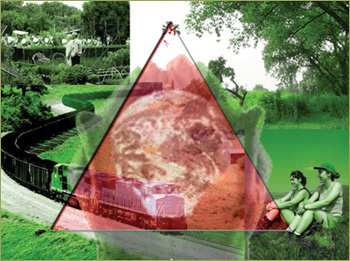

- That social and cultural values can best be preserved at the local
or regional community level;
- Self-reliance, ecological stewardship and equity are the keys to sustainability;
- No further development of supranational institutions. National governments
remain responsible for foreign and security policy, fiscal policy, Justice
etc.
- CAP subsidies: increase of some 10%, linked to environmental and social
targets. Export subsidies are eliminated;
- Import barriers remain in place, to protect local markets against
cheap imports;
- Imported goods have to comply with the high EU standards regarding
health, environment, and animal welfare;
- After accession of Romania and Bulgaria no further enlargement of
the EU.
|
 |